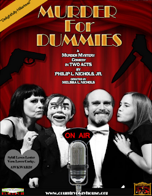

Dummy to save the day!
8/23/2012
From Melissa Nichols:
Hi Clinton,
Hi Clinton,
I wanted to tell you about a play I will be directing this fall, which features a ventriloquist.
The play was actually written by Phil, and is a murder-mystery comedy in two acts, and is very much in the vein of “Charlie McCarthy Detective.”
{kind=link}

It is about a radio star ventriloquist who is invited to a posh country estate for the weekend to entertain the members of a Billionaire family. During the course of the weekend, the group is cut off by the landfall of a tropical cyclone, and to make matters worse, there is a murder... and another... and another! In order to save the day and everyone’s skin, the little wooden pal of Lester Winchell (the vent) steps up to the plate to solve the mystery and save the day!I will also be filming the performances to cut together a DVD of the show.
September 13-16, 2012.
The Country Playhouse, Houston, Texas. www.countryplayhouse.org
September 13-16, 2012.
The Country Playhouse, Houston, Texas. www.countryplayhouse.org
Cheers!
Melissa (and Charlene)
Melissa (and Charlene)